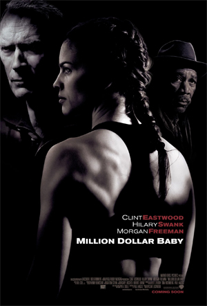

Wanting to learn from the best, aspiring boxer Maggie Fitzgerald wants Frankie Dunn to train her. At the outset he flatly refuses saying he has no interest in training a girl. Frankie leads a lonely existence, alienated from his only daughter and having few friends. She's rough around the edges but shows a lot of grit in the ring and he eventually relents. Maggie not only proves to be the boxer he always dreamed of having under his wing but a friend who fills the great void he's had in his life. Maggie's career skyrockets but an accident in the ring leads her to ask Frankie for one last favor.
